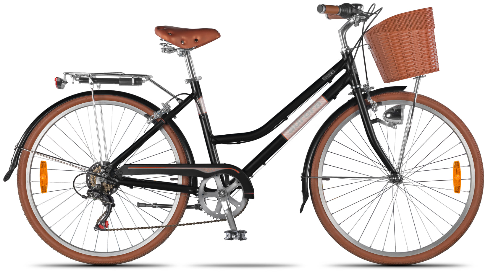
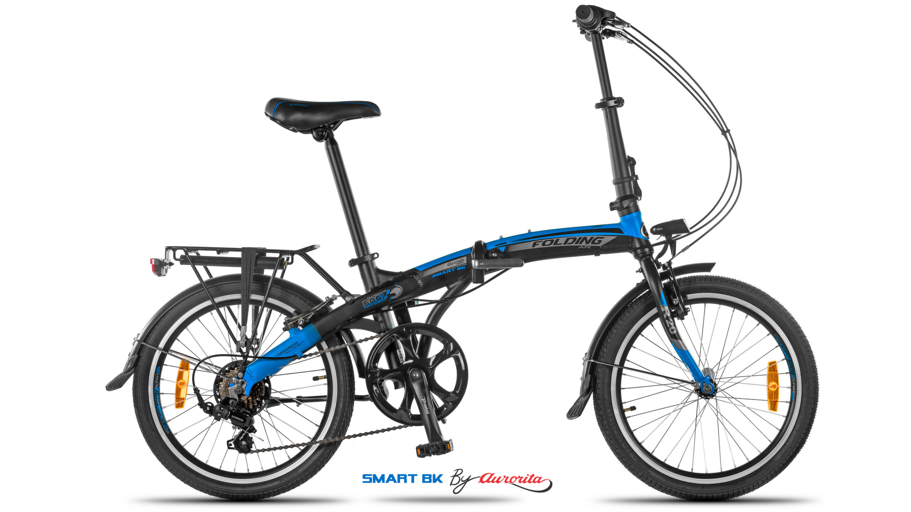

¿Cómo elegir una bicicleta?
Lo más importante para decidir la compra de tu bici es que pienses claramente para qué tipo de actividad la vas a utilizar. No es lo mismo si vas a usar tu bicicleta en la ciudad, que si la vas a usar en montaña, para pasear los fines de semana, diariamente para ir al trabajo o la facultad, o si la vas a usar para entrenar. Además es importante tener en cuenta el estado físico que tenés antes de comprar una bici: no es bueno para tu cuerpo que compres una bici que no se adapte a tu estado. Aunque luego tengas pensado que como resultado de realizar ciclismo puedas lograr un mejor estado físico, tenés que tener en cuenta que a la bicicleta la vas a usar con tu "actual" estado. Otra cosa importante que debes conocer es que las bicicletas tienen "talles", tal como sucede con un zapato, cada bici se adapta a la altura de quien la va a usar, por eso es importante tomar en cuenta esto como parte de la evaluación de tu compra.
¿Qué bicicleta me conviene?
Antes que nada, si ya sabes para qué tipo de actividad la vas a usar, considera que existen bicicletas para: paseo o uso relajado, bicicletas de montaña, bicicletas de pista o carrera. Esa es la gran división en 3 segmentos que tienen las bicis. Luego tenés que pensar el tiempo semanal que la vas a utilizar. Eso te va a ayudar a definir el tipo de equipamiento que tiene que tener tu bici (cambios, amortiguación, cuadro liviano, cuadro fuerte, espesor de ruedas, etc). Una vez definido esto, es importante que evalúes tu estado físico, esto se refiere básicamente a tu obesidad, nivel de entrenamiento muscular, resistencia cardio respiratoria, etc. Básicamente para este punto te recomendamos que vos mismo evalúes si estás muy obeso, poco obeso, o si estás en tu peso o cerca de tu peso ideal. Eso lo puedes decidir con la ayuda de un médico clínico si es que por tus propios medios no lo puedes determinar. No se trata de evaluar al máximo tu peso, sino que simplemente determines si estás o no obeso. Hacemos hincapié en esto porque es importante que sepas diferenciar tu capacidad de utilizar una bicicleta de otra, ya que en el caso que estés obeso algunas bicicletas pueden no solo no ayudarte a realizar tu actividad ciclística, sino a lastimar tus rodillas, cintura, columna, cervical, y otras partes de tu cuerpo además de generarte un gasto en roturas de bicicleta por no estar adecuadamente enfocada en tu contextura física.
¿Cómo mido el talle de una bicicleta?
Por último, algo un poco más fácil de determinar es el talle de tu bicicleta. Eso básicamente lo lográs midiéndote de piés a cabeza como lo hacías de chico con un metro común, y en base a tu estatura se estima que el talle de tu bicicleta deberá ser:
Adultos
de 1,50 a 1,70 >>>>> Talle 16
de 1,70 a 1,80
>>>>> Talle
17 / 18
de 1,80 a 1,90 >>>>> Talle 19 / 20
de 1,90 a 1,98
>>>>>
Talle 21 / 22
de 1,99 en adelante >>>>> Talles especiales
¿Cómo elegir bicicletas para chicos?
En estos casos las bicicletas no se deciden por talles, sino por rodados. Se estima que los más chiquitos que empiezan a andar a eso de 2 años de edad usen las bicicletas de madera sin rueditas ni pedales, que son habitualmente rodado 12. Queremos tomarnos un minuto para este tipo de bicis, ya que es importante destacar lo siguiente:
Luego de usar esas bicicletas hasta los 4 años (las bicicletas de madera como las que nombramos pueden levantar el asiento y el manubrio para alargar su uso por parte del chico) los chicos ya han aprendido el equilibrio sin necesidad de pasar por el trauma de las bicis con rueditas (las bicis con rueditas no enseñan a los chicos a andar en bici, solo los sostienen con las rueditas mientras ellos pedalean). Como todos sabemos cuando a los chicos se les quitan las rueditas de las bicis se les genera un trauma, ya que se les exige que comiencen a andar primero con 1 rueda menos, con lo que los chicos vuelcan todo el peso de su cuerpo al lado contrario para pedalear. Luego se les quita la segunda rueda, y ahí comienza el drama de: mamá déjame las rueditas! no quiero andar! mamá llévame vos! etc, etc, llantos y lágrimas de por medio. Eso nos indica claramente el resultado de las bicis con rueditas: los chicos no aprendieron por sí mismos el equilibrio sobre la bici. Las bicicletas de madera sin pedales ni rueditas, les enseñan desde muy pequeños y de forma muy intuitiva a utilizar su cerebro para equilibrarse sobre la bici, y lo aprenden sin sufrir los traumas del quite de rueditas ya mencionado y por todos los padres más que conocido.

Una vez que los chicos ya saben utilizar el equilibrio de su cuerpo, no es necesario volver nunca más a las rueditas, por eso se entiende que las medidas de bicis a elegir van a variar como en los adultos por LA ALTURA del chico, no por su edad. Lo que queremos decir es que no importa si el chico tiene 3, 4, o más años sino cuánto mide en el momento que le queremos comprar una bicicleta. Para guiarnos hay una forma muy sencilla de decidir el rodado correcto para los más chicos: si cuando el nene/a se sienta en la bici llega al piso con los pies apoyados por completo, esa bicicleta le queda CHICA. La bicicleta correcta será siempre la que estando el asiento en su punto mínimo lo deje al nene/a sentado con medio pié apoyado en el piso (o sea la punta de los pies y un poco más, pero sin llegar a apoyar la planta del pié completa).
Los rodados para los más chicos van del 12, 16, al 20. Las medidas intermedias por lo general no se eligen ya que los padres también quieren ahorrar dinero, y prefieren siempre que la bici no se cambie todos los años. El problema es que los chicos en estas edades suelen crecer mucho y rápidamente, y no todos los chicos crecen al mismo ritmo y a la misma altura, por eso no es posible tampoco establecer una escala por edades, sino haciendo sencillamente la prueba que indicamos arriba: siente al chico en la bicicleta estando el asiento bien abajo, y que el nene/a toque el piso con los pies y verifique que solo apoye la mitad como mucho de la planta del pié en el piso.
No es recomendable (por ahorrar dinero) comprarle al chico una bicicleta más grande que lo que pueda manejar al momento mismo de la compra. Recuerde que su hijo/a deberá usar la bicicleta en ESE MISMO MOMENTO, no dentro de 1 año cuando esté más crecido/a. Por eso es mejor evitarle a los chicos malas posturas, estirarlos forzadamente en bicicletas más grandes que lo que les corresponde, ya que no solo está haciendo padecer a su hijo/a sus primeros contactos con la bicicleta, sino que además puede ocasionarle lesiones físicas causadas por el mal uso de la bicicleta. Sea sincero/a con su compra y cómprele a su hijo la bicicleta que HOY necesita. Recuerde que si usted le hizo la prueba que le indicamos arriba, la mayoría de las bicicletas luego le permiten levantar el asiento así como también el manubrio, pudiendo utilizarla en forma correcta a medida que el chico/a van creciendo.
Considerando a los niños hasta una edad promedio de 13 años, en general por su altura utilizan rodados: 12, 16, 20 y hasta 24. Luego el grupo comprendido en edades que van en promedio de los 13 a los 18 años pueden utilizar rodados que van del 24 al 26, siempre dependiendo estrictamente de su altura, recuérdelo. Considerando a los chicos como adultos a partir de los 18 años de edad ya pueden comenzar a utilizar cuadros con medidas o talles, tal como comentamos más arriba en la tabla de talles y alturas de adultos.
Conocé nuestras bicis para niños con este link donde las verás con todos los detalles, fotos y precios: Bicicletas para chicos
¿Bicicleta urbana, plegable o híbrida?
Básicamente pensá en qué tipo de circuito vas a usar tu bici. Con circuito nos referimos a: la vas a usar solo en la ciudad, en la ciudad y en terrenos no asfaltados, en la ciudad y en montaña, en circuitos de entrenamiento, o la vas a usar en la montaña. Es importante definir el tipo de bici a usar en base al terreno en que se va a usar, ya que no es lo mismo una bici preparada para la montaña, que otra preparada para la ciudad o para entrenar.
Bicicletas de paseo

Las más lindas para andar relajados, las que te dejan disfrutar de tu alrededor mientras
paseas, las
que te llevan casi sin que te dieras cuenta.
Pensadas básicamente para superficies planas
(CIUDADES) o al menos con poca inclinación y pocas ondulaciones o pozos. Este tipo de bicis
es ideal
para llevar una postura relajada, con la columna bastante erguida, los brazos relajados
sobre el
manubrio, apoyando el peso de tu cuerpo fundamentalmente sobre tus nalgas. Estas bicis están
pensadas para recorridos medios de andada, lo que quiere decir que no son pensadas para
largas
jornadas de uso, sino más bien para tiempos medios como un par de horas andando, en forma
tranquila,
sin buscar en el andar grandes velocidades, sino más bien buscando relajarse mientras se
pasea a una
velocidad media. Estas bicis son muy buenas por ejemplo para quienes quieren comenzar a usar
la bici
luego de mucho tiempo de no subirse a una, o para aquellos que quieren salir a dar unas
vueltas los
fines de semana sin realizar un fuerte esfuerzo. Son ideales para aquellos que como decíamos
más
arriba tienen un estado físico que necesita de una actividad suave para comenzar de a poco a
bajar
de peso, o para retomar de a poco una actividad que se llevaba adelante hace mucho. Son
ideales para
salir con amigos a recorrer la ciudad, o pasear con tu pareja y cortar con la rutina de la
semana,
para salir en familia junto a los más chicos y acompañarlos en sus primeras salidas en bici.
Recordá
que las bicis de pase te permiten estar atento/a a tu alrededor, ya que por como se va
sentado en
ellas, tenés una visión bastante amplia de tu alrededor, lo que te permite prestar atención
a lo que
te rodea, detener la mirada en algo que te interese, poder frenar la bici lentamente sin
sobresaltos, y de ese modo poder disfrutar del camino que se esté llevando adelante, así
como de la
compañía que elijas. No hay nada más lindo que tomarle la mano a la persona que más quieras
mientras
ambos pasean juntos en bicicleta. Probalo =)
Mirá algunas de nuestras bicis urbanas recomendadas en este link: Bicicletas urbanas
Bicicletas Plegables

Las estrellas de las ciudades, las nuevas (remakes) dueñas de las ciudades apretadas, la
solución
ideal para espacios pequeños donde guardarlas.
Las plegables no son nada nuevas, llevan
varias
décadas con nosotros. Si vas a pensar en una plegable te recomendamos que la justifiques
con: tengo
poco espacio donde guardar mi bici, ó: tengo que meterla o subirla por lugares que no son
nada
cómodos.
Las bicis plegables están pensadas para recorridos cortos, ya que en su mayoría
se trata
de rodados 20. Hay bicis en rodados más grandes, pero como se diseñaron especialemente para
ahorrar
espacio al guardarlas, las bicis que más se han fabricado son las de rodado chico. Ojo a no
dejarse
engañar: que la bici tenga rodado chico en este caso no quiere decir que sea para chicos, ya
que la
bici plegable cuenta siempre con dos detalles: 1) Tienen una plato bien grande (es el
engranaje que
se ve pegado a los piés al pedalear) y 2) Tienen un sistema de cambios trasero, lo que nos
permite
pedalear sin mucho esfuerzo y sin dar muchas pedaleadas como locos.
Se recomiendan para aquellos que viven en la ciudad y van desde sus hogares hasta un medio de transporte, o directamente hasta su trabajo o destino, siendo un recorrido de pocos kilómetros o de no más de 40 minutos de uso. Esto lo mencionamos a manera de referencia, más que nada basados en que si el recorrido fuera más largo las bicis recomendadas serían las de paseo con rodado más grande, para evitar cansarnos y lastimarnos rodillas, codos y hombros ya que la postura en estas bicis ni es tan relajada como en las de paseo.
Las bicis plegables tienen como principal fortaleza que se hacen pequeñas al doblarlas, pero
como
contrapartida podemos nombrar que tienen muchas partes móviles, cierres sobre todo y
bisagras lo que
tiende a tener un desgaste mayor que en las bicicletas tradicionales, y por lo tanto
demandan mayor
inversión en mantenimiento.
Las bicis plegables no son amigables con canastos, si con
alforjas
traseras desmontables. Son lindas estéticamente ya que son novedosas en sus diseños respecto
al
parque ciclístico estándar, están de moda en las ciudades pero no siempre es justificado su
uso. La
recomendamos para ciclos cortos, para personas mayores que no pueden levantar bicis pesadas,
o para
aquellos que realmente no poseen mucho lugar donde guardarlas en sus hogares.
Mirá las mejores plegables que tenemos para vos con este link: Bicicletas plegables
Bicicletas Híbridas

Si la vas a utilizar en la ciudad para pasear, si la vas a usar en la ciudad para entrenar, si la vas a utilizar en la ciudad diariamente para realizar una actividad de traslado (como puede ser ir al trabajo, ir a la facultad o colegio, etc) si la vas a utilizar un poco en la ciudad y otro poco en otro tipo de terreno que no es básicamente asfalto. Conocé algunas de las mejores que tenemos con este link: Bicicletas híbridas
Eso es todo por el momento sobre como elegir tu bici. Acercanos tus dudas y comentarios por nuestras redes sociales y te ayudaremos a resolverlos cuanto antes.
Un fuerte abrazo, y ¡a rodarla!
ACASSUSO BIKE CENTER